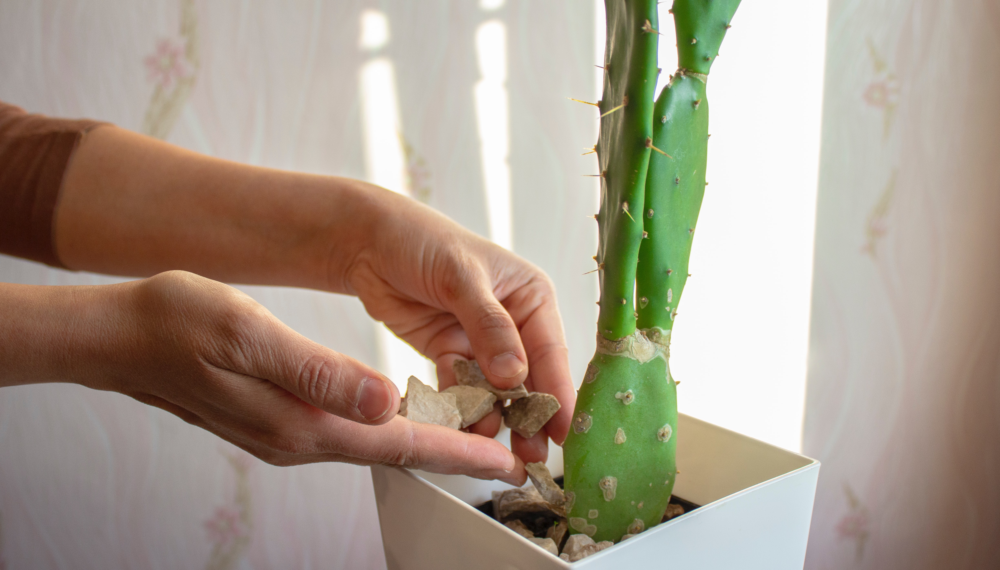
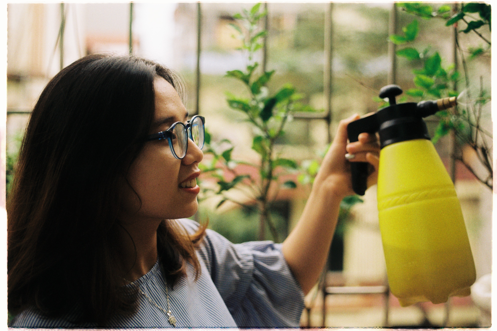
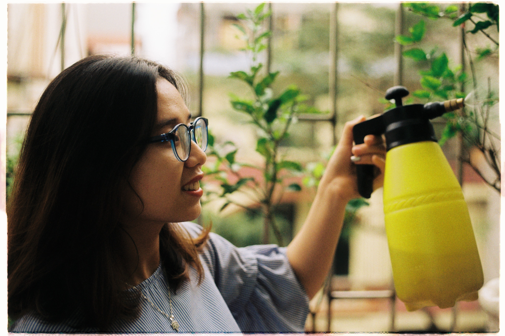
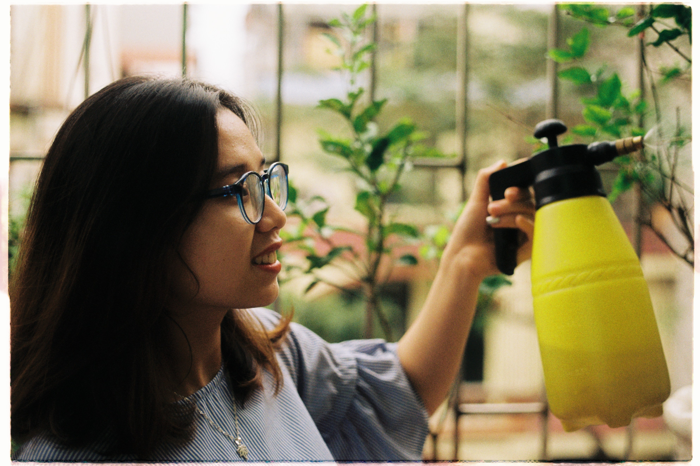

What we can help you with

 


Whether you're gone for a short trip, week long vacation, or extended period, we offer plant care that covers all your plant babies. We also offer regular maintenance services for people who just need some special plant help. Plant sitting can include: watering, misting, re-filling humidifiers, opening greenhouses for airflow and turning grow lights on. If you have other specific services in mind, please let us know! We are more than willing to accommodate specific plant needs.
Get in touch